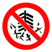

2021年北京市中考化学真题 · 选择题 第11、12、13、14、15题
11. 如图所示的图标表示

A. 禁止吸烟B. 禁止燃放鞭炮
C. 禁止带火种D. 禁止堆放易燃物
12. 下列H2的性质中，属于化学性质的是
A. 难溶于水B. 无色气体C. 能燃烧D. 熔点低
13. 下表列出了某果仁的营养分，其中含量最高的营养素是
项目 | 每100g |
蛋白质 脂肪 碳水化合物 钠 | 13.2g 70.1g 13.0g 216mg |
A. 蛋白质B. 糖类C. 油脂D. 无机盐
14. 一些物质的pH范围如下，其中呈碱性的是
A. 柠檬汁（2-3）B. 酱油（4-5）C. 西瓜汁（5-6）D. 洗发水（8-9）
15. 下列物质属于有机化合物的是
A. NaClB. NaOHC. HClD. CH4
我国冶炼金属的历史悠久、回答问题。